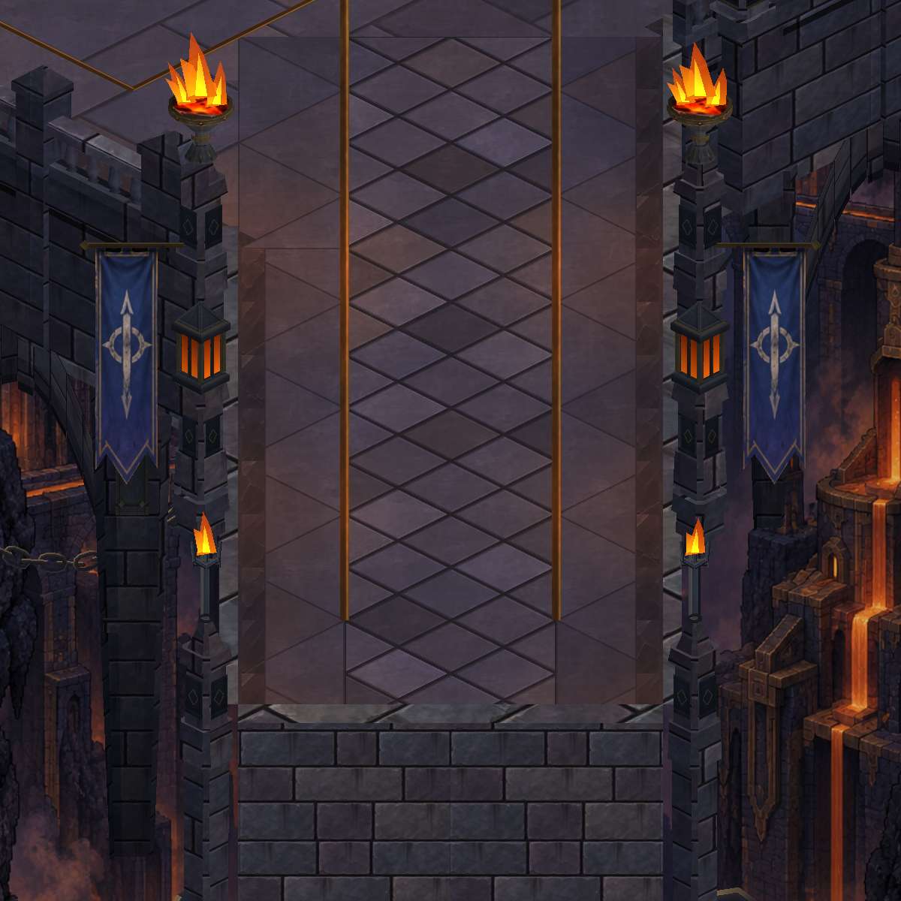

Köprü · Kumaş hareketi
Üst bağlantı sabit; kumaş alt uçlara doğru yavaşça dalgalanıyor. Hareket, oyunun duraklatılmasıyla birlikte duruyor.
Gerçek Unity çekimlerinden sekiz karelik kısa tekrar. Canlı oyun veya kesintisiz video değildir.

Telefon görünümü · İkinci poz · Doğrulama notları